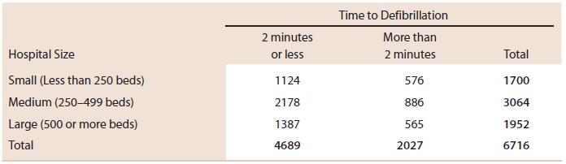

Eventos independientes y Mutuamente excluyentes
Contents
import numpy as np
import pandas as pd
from scipy.stats import trim_mean
from fractions import Fraction
# Calculo de la probabilidad
def P(event, space):
"The probability of an event, given a sample space."
return Fraction(cases(favorable(event, space)),
cases(space))
favorable = set.intersection # Outcomes that are in the event and in the sample space
cases = len # The number of cases is the length, or size, of a set
Eventos independientes y Mutuamente excluyentes#
Probabilidad condicional#
Calculo de probabilidades condicionales
Para encontrar la \(P(A|B)\) se usa la expresión:
Por otro lado, la probabilidad condicional \(P(B|A)\) esta dada por:
Ejemplo de repaso#
Las pautas médicas recomiendan que un paciente hospitalizado que sufre un paro cardíaco debe recibir una desfibrilación (descarga eléctrica en el corazón) dentro de los 2 minutos. El paper “Delayed Time to Defibrillation After In-Hospital Cardiac Arrest” (The New England Journal of Medicine [2008]: 9–17) (link) describe un estudio del tiempo de desfibrilación para pacientes hospitalizados en hospitales de diferentes tamaños.
Los autores examinaron los registros médicos de 6716 pacientes que sufrieron un paro cardíaco mientras estaban hospitalizados, registraron el tamaño del hospital y si la desfibrilación se produjo en 2 minutos o menos. Los datos de este estudio se resumen en la siguiente tabla:

Suponiendo que estos datos son representativos del grupo más grande de todos los pacientes hospitalizados que sufren un paro cardíaco. Suponga que se selecciona al azar un paciente hospitalizado que sufrió un paro cardíaco. Si los siguientes eventos son de interés:
S = evento de que el paciente seleccionado se encuentre en un hospital pequeño.
M = evento de que el paciente seleccionado se encuentre en un hospital de tamaño medio.
L = evento de que el paciente seleccionado se encuentre en un hospital grande.
D = evento de que el paciente seleccionado reciba desfibrilación en dos minutos o menos.
Calcular:
La probabilidad de que un paciente hospitalizado reciba una desfibrilación de manera oportuna (en dos minutos o menos).
A partir de la tabla realizamos el calculo:
\(P(D)=\frac{4689}{6716} = 0.698\)Si se selecciona un paciente que se encuentra dentro de un hospital pequeño, que tan probable es que dicho paciente reciba una desfibrilación en dos minutos o menos.
Tenemos que: \(P(D|S)=\frac{P(D \bigcap S)}{P(S)}\)
Primero se calcula la probabilidad de que el paciente hospitalizado en un hospital pequeño sufre el paro cardiaco y recibe la desfibrilación de manera oportuna:\(P(D \bigcap S) = \frac{1124}{6716} = 0.167\)
Luego, la probabilidad de que el paciente que sufre el paro cardiado se encuentra hospitalizado en un hospital pequeño:
\(P(S) = \frac{1700}{6716}= 0.253\)
Finalmente, usando estas dos expresiones calculamos la probabilidad condicional que se pide:
\(P(D|S)=\frac{P(D \bigcap S)}{P(S)}=\frac{0.167}{0.253} = 0.660\)
Cual es la probabilidad de recibir la desfibrilación dentro del tiempo adecuado para el caso en el cual el paciente es elegido den un hospital mediano.
Nos piden: \(P(D|M)\)
\(P(D|M)=\frac{P(D \bigcap M)}{P(M)}=\frac{\frac{2178}{6716}}{\frac{3064}{6716}} = \frac{2178}{3064} = 0.711\)
Cuando se selecciona el paciente de un hospital grande, ¿Cual es la probabilidad de que el paciente elegido reciba la desfibrilacion dentro del tiempo prudencial?
En este caso se pide: \(P(D|L)\)
\(P(D|L)=\frac{P(D \bigcap L)}{P(L)}=\frac{\frac{1387}{6716}}{\frac{1952}{6716}} = \frac{1387}{1952} = 0.711\)
Tipos de eventos#
Eventos independientes#
Dos eventos \(A\) y \(B\) son independientes si el conocimiento de que uno ha ocurrido no afecta la posibilidad de que ocurra el otro.
Eventos independientes
Si \(A\) y \(B\) son dos eventos independientes se cumple que:
Para demostrar que dos eventos son independientes, basta con demostrar solo una de las condiciones anteriormente mostradas.
Ejemplo#
# Usando numpy
profundidad = np.array([40, 52, 55, 60, 70, 75, 85, 85, 90, 90, 92, 94, 94, 95, 98, 100, 115, 125, 125])
min_prof = np.quantile(profundidad,q = 0.0) # np.percentile(profundidad,q = 0)
max_prof = np.quantile(profundidad,q = 1.0) # np.percentile(profundidad,q = 100)
Q1_prof = np.quantile(profundidad,q = 0.25) # np.percentile(profundidad,q = 25)
Q3_prof = np.quantile(profundidad,q = 0.75) # np.percentile(profundidad,q = 75)
median_prof = np.quantile(profundidad,q = 0.5) # np.median(profundidad)
rango_prof = np.ptp(profundidad)
print("Resumen profundidades")
print("- Minimo: ", min_prof, sep="")
print("- Q1: ", Q1_prof , sep="")
print("- Mediana: ", median_prof , sep="")
print("- Q3: ", Q3_prof , sep="")
print("- Maximo: ", max_prof, sep="")
print("- IRQ: ", Q3_prof - Q1_prof, sep="")
Resumen profundidades
- Minimo: 40.0
- Q1: 72.5
- Mediana: 90.0
- Q3: 96.5
- Maximo: 125.0
- IRQ: 24.0
https://github.com/jonkrohn/ML-foundations/blob/master/notebooks/5-probability.ipynb
https://github.com/jonkrohn/ML-foundations/blob/master/notebooks/6-statistics.ipynb
https://github.com/unpingco/Python-for-Probability-Statistics-and-Machine-Learning
https://github.com/Quantreo/UDEMY-STATISTIC-AND-PROBABILITY-for-quantitative-finance
https://ipython-books.github.io/154-computing-exact-probabilities-and-manipulating-random-variables/
Otros
https://medium.com/analytics-vidhya/first-step-to-statistics-with-iris-data-3d29c0820c5d
https://www.kaggle.com/code/neha99/statistical-analysis-on-iris-dataset
https://www.kaggle.com/code/hassanamin/probability-and-statistics-with-python
https://www.geeksforgeeks.org/exploratory-data-analysis-on-iris-dataset/
http://www.lac.inpe.br/~rafael.santos/Docs/CAP394/WholeStory-Iris.html
https://courses.cs.ut.ee/MTAT.03.183/2017_spring/uploads/Main/example_submission.html
https://www.cs.bu.edu/fac/snyder/cs237/tutorials/LearningPython.html
https://web.stanford.edu/class/archive/cs/cs109/cs109.1192/handouts/pythonForProbability.html